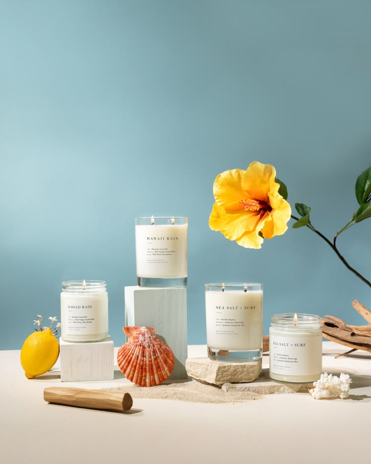

01
Trim before every burn
Keep the wick at about 5 mm. A shorter wick gives you a calmer flame, less soot, and a longer-lasting candle.
The burn guide
A beautiful burn is mostly simple care. Six small habits make all the difference.
Read the guide ↓Keep the wick at about 5 mm. A shorter wick gives you a calmer flame, less soot, and a longer-lasting candle.
Allow the melt pool to reach the vessel edge—usually 2–3 hours—to help prevent tunnelling.
Longer is not better. Extinguish after four hours, let the wax cool completely, then trim before relighting.
Keep your candle away from fans, open windows, children, and pets. A steady flame burns more evenly.
Stop burning when 1 cm of wax remains. The base can become very hot when the flame reaches the bottom.
Freeze the cooled jar, lift out the wax, wash gently, and reuse it for brushes, flowers, or tiny treasures.

The golden rule
Wax remembers where it melted last. Give the first burn enough time to reach the full edge of the glass and every burn after it will be more even, fragrant, and beautiful.
Common questions